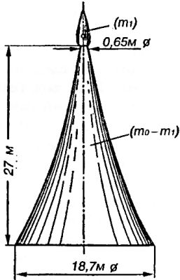

«Пороховая башня» Гомана
Параллельно с Обертом и Валье над темой межпланетных перелетов работал и Вальтер Гоман, архитектор города Эссена. Его книга «Возможность достижения других небесных тел» увидела свет в 1925 году.
Книга содержала подробное и поэтапное описание программы межпланетной экспедиции, ее математической модели и оптимальных траекторий. Однако в отличие от предшественников Гоман не счел нужным говорить о каких-то конкретных конструкциях космических кораблей, ограничившись математическим исследованием величин данного или принятого количества топлива, необходимого для предполагаемой работы ракетного двигателя.
В качестве иллюстрации к своим выкладкам Гоман нарисовал «пороховую башню», которую только с очень большой натяжкой можно назвать проектом космического ракетного корабля.
Смысл иллюстрации заключался в следующем. Если представить себе, что на некоторую работу потребовалось бы 6 минут, и если принять, что «башня» горела бы только у основания, то можно было бы провести через нее 6 параллельных линий. Это дало бы 6 дисков пороха плюс полезную нагрузку (капсулу с двумя пассажирами), которую необходимо привести в движение. Каждый из шести дисков имел бы одинаковую толщину, но разный диаметр и разный вес. Каждый слой пороха представлял бы собой количество то-топливанеобходимое для работы в течение одной минуты: самый большой диск снизу указывал бы количество пороха, необходимого для работы в первую минуту, и так далее. Если сделать достаточно большой и аккуратный чертеж, то можно разделить любой слой на 60 частей и найти количество пороха, необходимое для работы ракеты в каждую секунду.
Исходя из расчета 30-дневного полета Гоман оценил вес каюты и припасов в 2260 килограммов. При этом вес всей «пороховой башни» должен был составить 2799 тонн.

Для того чтобы изменить направление полета, Гоман советовал пассажирам, находящимся внутри снаряда, передвигаться в противоположном от необходимого направлении, цепляясь за поручни, прикрепленные внутри стенок. При этом снаряд будет вращаться в обратную сторону, пока его виртуальные «дюзы» не окажутся повернуты в желаемом направлении.
Для облегчения спуска на Землю Гоман предлагал к летящему из межпланетного пространства со скоростью 11,1 км/с снаряду приделать тормозящие поверхности, которые задерживали бы его полет в земной атмосфере, а, кроме того, сам спуск на Землю должен был производиться не радиально, а по спирали: корабль должен был описывать вокруг Земли все меньшие и меньшие эллипсы, верхушки которых пронизывали бы земную атмосферу на высоте 75 километров, пока скорость полета не уменьшилась бы до необходимой величины. Далее полет переходит в планирование по глиссаде длиною 3646 километров.